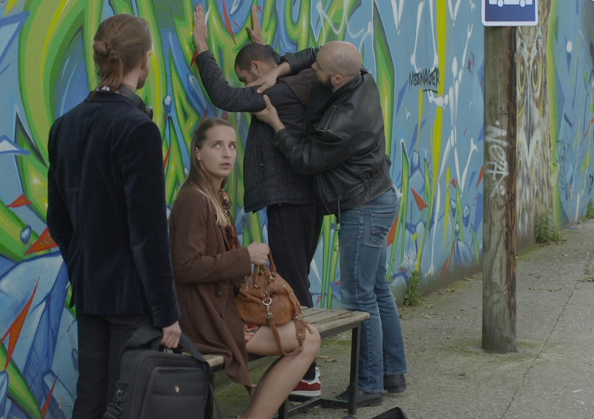
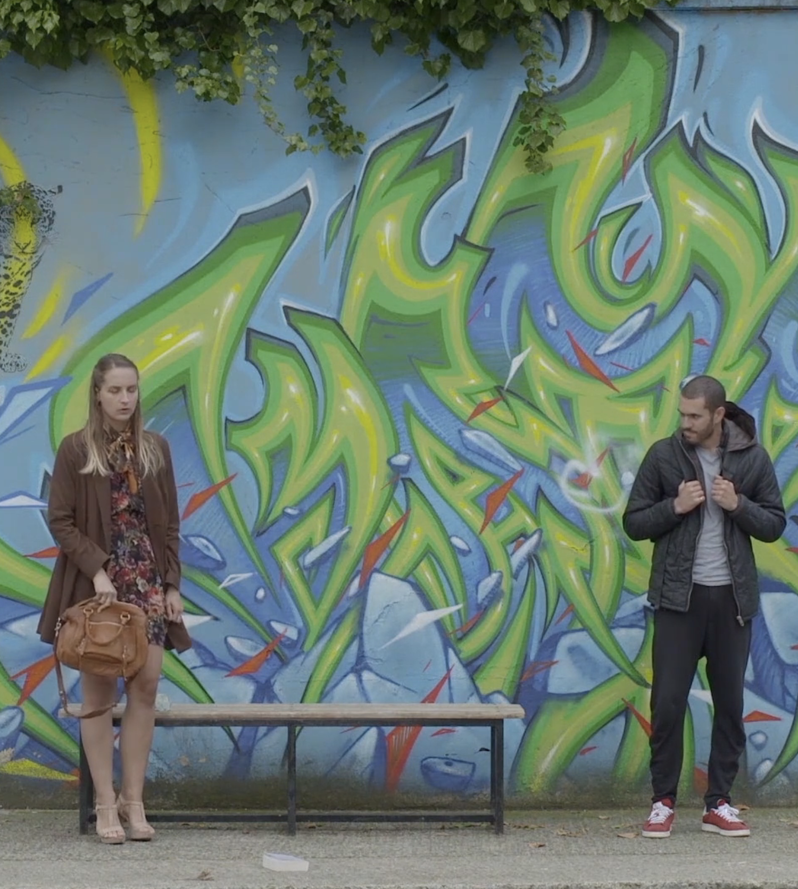

Short / France
Bien entendu
La violence n’est pas seulement celle des policiers. Une société qui valide l’agression en est tout autant responsable. »
Synopsis
O filme observa e tensiona o cotidiano de abordagens policiais, revelando como a violência não se limita ao gesto individual, mas se inscreve em estruturas mais amplas de normalização e aceitação social.
Approach
Inspirado por uma tradição de cinema que busca capturar o real sem mediação espetacular, o filme se aproxima da rotina policial para expor seus mecanismos, suas repetições e suas zonas de ambiguidade. Ao invés de narrativas heroicas ou demonizantes, propõe uma observação direta, colocando o espectador na posição de testemunha.
Intent
O projeto desloca o foco do indivíduo para o sistema. A violência aparece não como exceção, mas como prática possível dentro de um contexto social que a legitima, a reproduz e, muitas vezes, a invisibiliza.
Role
Direção, concepção e construção narrativa. O filme se inscreve em uma pesquisa contínua sobre imagem, poder e representação, atravessando questões de território, controle e responsabilidade coletiva.


